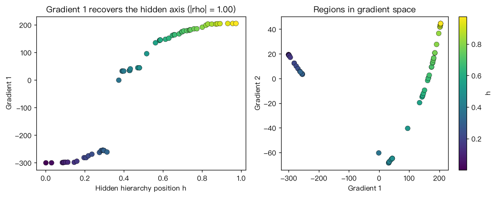

Example07 / 10
连接组梯度——扩散映射嵌入
模拟 60 个脑区沿一条隐藏的“感觉–联合”轴 h ∈ [0,1] 排列，FC 随 |h_i − h_j| 衰减，并加噪声。 按常见做法：每行只保留最强 10% 的连接，计算行向量的余弦相似度作为亲和矩阵 K， 做 α = 0.5 的扩散映射：先 K_α = D^{-α} K D^{-α}，再行归一化为马尔可夫矩阵，取非平凡特征向量。 输出解读：第一梯度与隐藏轴 h 的 Spearman 相关绝对值接近 1（梯度符号任意）； 第二梯度与隐藏轴的关系弱得多（它捕捉的是与第一梯度正交的次要变化）。梯度描述的是“连接模式的相似性”沿皮层的连续变化，而不是离散模块。
Output输出图

Output文字输出
梯度 1 与隐藏轴的 Spearman |ρ| = 0.998 梯度 2 与隐藏轴的 Spearman |ρ| = 0.296 前 3 个非平凡特征值： [0.995, 0.971, 0.928]
Code代码
# 模拟 60 个脑区沿一条隐藏的“感觉–联合”轴 h ∈ [0,1] 排列，FC 随 |h_i − h_j| 衰减，并加噪声。
# 按常见做法：每行只保留最强 10% 的连接，计算行向量的余弦相似度作为亲和矩阵 K，
# 做 α = 0.5 的扩散映射：先 K_α = D^{-α} K D^{-α}，再行归一化为马尔可夫矩阵，取非平凡特征向量。
# 输出解读：第一梯度与隐藏轴 h 的 Spearman 相关绝对值接近 1（梯度符号任意）；
# 第二梯度与隐藏轴的关系弱得多（它捕捉的是与第一梯度正交的次要变化）。梯度描述的是“连接模式的相似性”沿皮层的连续变化，而不是离散模块。
import numpy as np
from scipy.stats import spearmanr
rng = np.random.default_rng(3) # 模拟数据，仅用于演示方法
N, T = 60, 400
h = np.sort(rng.uniform(0, 1, N)) # 隐藏的层级位置
C = np.exp(-np.abs(h[:, None] - h[None, :]) / 0.2) # 真实协方差随层级距离衰减
L = np.linalg.cholesky(C + 1e-6 * np.eye(N))
X = L @ rng.standard_normal((N, T)) + 0.5 * rng.standard_normal((N, T))
R = np.corrcoef(X)
np.fill_diagonal(R, 0)
def diffusion_map(R, top=0.10, alpha=0.5, n_comp=3):
A = R.copy()
thr = np.quantile(A, 1 - top, axis=1, keepdims=True)
A[A < thr] = 0 # 每行保留最强 10%
norms = np.linalg.norm(A, axis=1, keepdims=True)
K = (A @ A.T) / (norms @ norms.T) # 余弦相似度
K = np.clip(K, 0, None)
d = K.sum(1)
Ka = K / np.outer(d ** alpha, d ** alpha)
da = Ka.sum(1)
S = Ka / np.sqrt(np.outer(da, da)) # 对称化，便于求特征分解
vals, vecs = np.linalg.eigh(S)
order = np.argsort(vals)[::-1]
vals, vecs = vals[order], vecs[:, order]
psi = vecs / vecs[:, [0]] # 还原为马尔可夫矩阵的右特征向量
lam = vals[1:n_comp + 1]
return psi[:, 1:n_comp + 1] * (lam / (1 - lam)), lam
grads, lam = diffusion_map(R)
rho1, _ = spearmanr(grads[:, 0], h)
rho2, _ = spearmanr(grads[:, 1], h)
print(f"梯度 1 与隐藏轴的 Spearman |ρ| = {abs(rho1):.3f}")
print(f"梯度 2 与隐藏轴的 Spearman |ρ| = {abs(rho2):.3f}")
print("前 3 个非平凡特征值：", np.round(lam, 3).tolist())
import matplotlib.pyplot as plt
fig, axes = plt.subplots(1, 2, figsize=(10, 4))
axes[0].scatter(h, grads[:, 0], c=h, cmap="viridis", s=50, edgecolor="k", lw=0.3)
axes[0].set(xlabel="Hidden hierarchy position h", ylabel="Gradient 1",
title=f"Gradient 1 recovers the hidden axis (|rho| = {abs(rho1):.2f})")
sc = axes[1].scatter(grads[:, 0], grads[:, 1], c=h, cmap="viridis", s=50, edgecolor="k", lw=0.3)
fig.colorbar(sc, ax=axes[1], label="h")
axes[1].set(xlabel="Gradient 1", ylabel="Gradient 2", title="Regions in gradient space")
plt.tight_layout(); plt.show()Run在浏览器中运行
首次加载 Python 环境约需 20–40 秒；可以修改参数后重新运行。